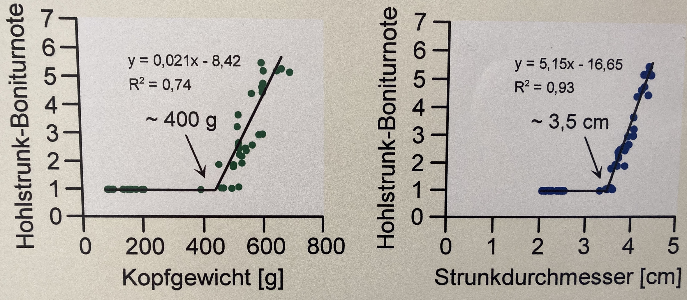
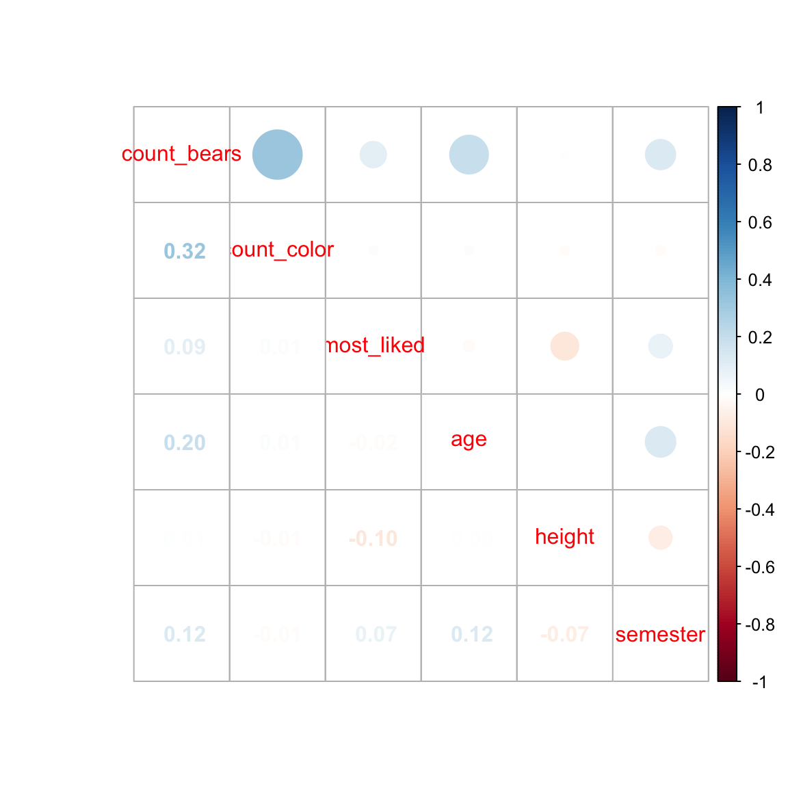
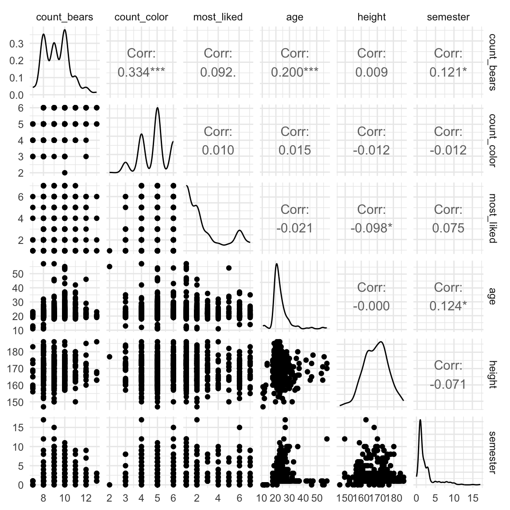
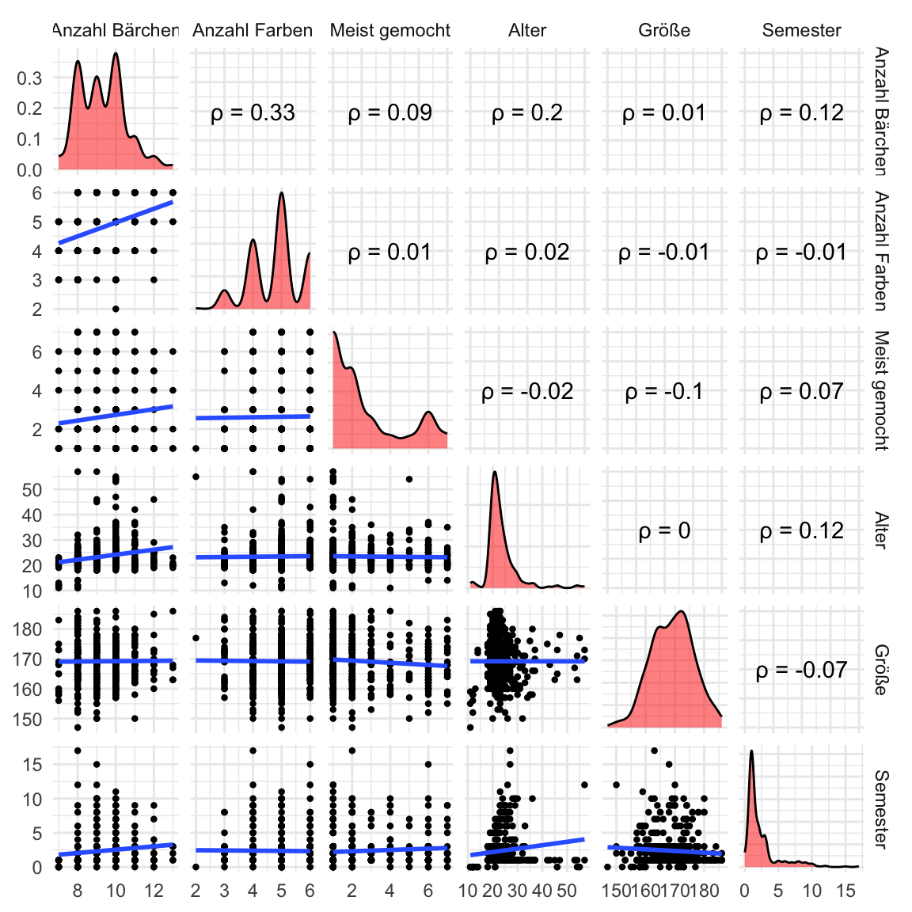

pacman::p_load(tidyverse, magrittr, conflicted, readxl,
corrplot, GGally, see)
conflict_prefer("select", "dplyr")
conflict_prefer("filter", "dplyr")
conflict_prefer("mutate", "dplyr")40 Korrelation
Letzte Änderung am 13. January 2024 um 19:48:49
“Most of you will have heard the maxim ‘correlation does not imply causation.’ Just because two variables have a statistical relationship with each other does not mean that one is responsible for the other. For instance, ice cream sales and forest fires are correlated because both occur more often in the summer heat. But there is no causation; you don’t light woodlands on fire when you buy a scoop of ice cream.” — Nate Silver, The Signal and the Noise: Why So Many Predictions Fail—But Some Don’t
Die Korrelation gibt uns die Information welche Steigung die Gerade in einer simplen linearen Regression hat. Dabei erlaubt es die Korrelation uns verschiedene Geraden miteinander zu vergleichen. Die Korrelation ist nämlich einheitslos. Wir standardisieren durch die Anwendung der Korrelation die Steigung der Geraden dafür auf -1 bis +1. Damit ist die Korrelation ein bedeutendes Effektmaß für die Abschätzung eines Zusammenhangs zwischen zwei Variablen.
Es gibt aber ein Problem. Nämlich nur weil etwas miteinander korreliert muss es keinen kausalen Zusammenhang geben. So ist die Ursache und Wirkung manchmal nicht klar zu benennen. Nehmen wir als plaktives Beispiel dicke Kinder, die viel Fernsehen. Wir würden annehmen, dass zwischen dem Fernsehkonsum und dem Gewicht von Kindern eine hohe Korrelation vorliegt. Sind jetzt aber die Kinder dick, weil die Kinder so viel Fernsehen oder schauen einfach dicke Kinder mehr Fernsehen, da die Kinder dick sind und sich nicht mehr so viel bewegen wollen?
Die Internetseite Spurious correlations zeigt verschiedene zufällige Korrelationen zwischen zwei zufällig ausgewählten Variablen aus den USA.
Im Weiteren ist das Wort korrelieren zum Gattungsbegriff in der Statistik geworden, wenn es um den Vergleich oder den Zusammenhang von zwei oder mehreren Variablen geht. Das heißt, in der Anwendung wird gesagt, dass wir A mit B korrelieren lassen wollen. Das Wort korrelieren steht jetzt aber nicht für das Konzept statistische Korrelation sondern ist Platzhalter für eine noch vom Anwender zu definierende oder zu findene statistische Methode.
In diesem Kapitel wollen wir uns mit der statistischen Korrelation beschäftigen. Die statistische Korrelation ist weniger aufregender, denn am Ende ist die Korrelation nur eine Zahl zwischen -1 und +1. Eigentlich ist das eine wichtige Botschaft, denn wenn deine berechnete Korrelation nicht zwischen -1 und +1 liegt, dann hast du was anderes berechnet oder aber hier stimmt was nicht.
40.1 Genutzte R Pakete
Wir wollen folgende R Pakete in diesem Kapitel nutzen.
Am Ende des Kapitels findest du nochmal den gesamten R Code in einem Rutsch zum selber durchführen oder aber kopieren.
40.2 Daten
Wir wollen uns erstmal mit einem einfachen Datenbeispiel beschäftigen. Wir können die Korrelation auf sehr großen Datensätzen berechnen, wie auch auf sehr kleinen Datensätzen. Prinzipiell ist das Vorgehen gleich. Wir nutzen jetzt aber erstmal einen kleinen Datensatz mit \(n=7\) Beobachtungen. In der Tabelle 40.1 ist der Datensatz simplel_tbl dargestellt. Wir wollen den Zusammenhang zwischen der Sprungweite in [cm] und dem Gewicht in [mg] für sieben Beobachtungen modellieren.
simple_tbl <- tibble(jump_length = c(1.2, 1.8, 1.3, 1.7, 2.6, 1.8, 2.7),
weight = c(0.8, 1, 1.2, 1.9, 2, 2.7, 2.8))| jump_length | weight |
|---|---|
| 1.2 | 0.8 |
| 1.8 | 1.0 |
| 1.3 | 1.2 |
| 1.7 | 1.9 |
| 2.6 | 2.0 |
| 1.8 | 2.7 |
| 2.7 | 2.8 |
In Abbildung 40.1 sehen wir die Visualisierung der Daten simple_tbl in einem Scatterplot mit einer geschätzen Gerade. Wir wollen jetzt mit der Korrelation die Steigung der Geraden unabhängig von der Einheit beschreiben. Oder wir wollen die Steigung der Geraden standardisieren auf -1 bis 1.

40.3 Korrelation theoretisch
Wir schauen uns hier die Korrelation nach Pearson an. Die Korrelation nach Pearson nimmt an, dass beide zu korrelierende Variablen einer Normalverteilung entstammen. Wenn wir keine Normalverteilung vorliegen haben, dann nutzen wir die Korrelation nach Spearman. Die Korrelation nach Spearman basiert auf den Rängen der Daten und ist ein nicht-parametrisches Verfahren. Die Korrelation nach Pearson ist die parametrische Variante. Wir bezeichnen die Korrelation entweder mit \(r\) oder dem griechischen Buchstaben \(\rho\) als rho gesprochen.
Was macht nun die Korrelation? Die Korrelation gibt die Richtung der Geraden an. Oder noch konkreter die Steigung der Geraden normiert auf -1 bis 1. Die Abbildung 40.2 zeigt die Visualisierung der Korrelation für drei Ausprägungen. Eine Korrelation von \(r = -1\) bedeutet eine maximale negative Korrelation. Die Gerade fällt in einem 45° Winkel. Eine Korrelation von \(r = +1\) bedeutet eine maximale positive Korrelation. Die gerade steigt in einem 45° Winkel. Eine Korrelation von \(r = 0\) bedeutet, dass keine Korrelation vorliegt. Die Grade verläuft parallel zur x-Achse.

Im Folgenden sehen wir die Formel für den Korrelationskoeffizient nach Pearson.
\[ \rho = r_{x,y} = \cfrac{s^2_{x,y}}{s_x \cdot s_y} \]
Wir berechnen die Korrelation immer zwischen zwei Variablen \(x\) und \(y\). Es gibt keine multiple Korrelation über mehr als zwei Variablen. Im Zähler der Formel zur Korrelation steht die Kovarianz von \(x\) und \(y\).
Wir können mit folgender Formel die Kovarianzen zwischen den beiden Variablen \(x\) und \(y\) berechnen.
\[ s^2_{x,y} = \sum_{i=1}^n(x_i-\bar{x})(y_i-\bar{y}) \]
Die folgende Formel berechnet die quadrierten Abweichung der Beobachtungen von \(x\) zum Mittelwert \(\bar{x}\).
\[ s_x = \sqrt{\sum_{i=1}^n(x_i-\bar{x})^2} \]
Die folgende Formel berechnet die quadrierten Abweichung der Beobachtungen von \(y\) zum Mittelwert \(\bar{y}\).
\[ s_y = \sqrt{\sum_{i=1}^n(y_i-\bar{y})^2} \]
In Tabelle 40.2 ist der Zusammenhang nochmal Schritt für Schritt aufgeschlüsselt. Wir berechnen erst die Abweichungsquadrate von \(x\) und die Abweichungsquadrate von \(y\). Dann noch die Quadrate der Abstände von \(x\) zu \(y\). Abschließend summieren wir alles und ziehen noch die Wurzel für die Abweichungsquadrate von \(x\) und \(y\).
| jump_length \(\boldsymbol{y}\) | weight \(\boldsymbol{x}\) | \(\boldsymbol{(y_i-\bar{y})^2}\) | \(\boldsymbol{(x_i-\bar{x})^2}\) | \(\boldsymbol{(x_i-\bar{x})(y_i-\bar{y})}\) |
|---|---|---|---|---|
| 1.2 | 0.8 | 0.45 | 0.94 | 0.65 |
| 1.8 | 1.0 | 0.01 | 0.60 | 0.06 |
| 1.3 | 1.2 | 0.33 | 0.33 | 0.33 |
| 1.7 | 1.9 | 0.03 | 0.02 | -0.02 |
| 2.6 | 2.0 | 0.53 | 0.05 | 0.17 |
| 1.8 | 2.7 | 0.03 | 0.86 | -0.07 |
| 2.7 | 2.8 | 0.69 | 1.06 | 0.85 |
| \(\sum\) | 2.05 | 3.86 | 1.97 | |
| \(\sqrt{\sum}\) | 1.43 | 1.96 |
Wir können die Zahlen dann aus der Tabelle in die Formel der Korrelation nach Pearson einsetzen. Wir erhalten eine Korrelation von 0.70 und haben damit eine recht starke positve Korrelation vorliegen.
\[ \rho = r_{x,y} = \cfrac{1.97}{1.96 \cdot 1.43} = 0.70 \]
Wir können mit der Funktion cor() in R die Korrelation zwischen zwei Spalten in einem Datensatz berechnen. Wir überprüfen kurz unsere Berechnung und stellen fest, dass wir richtig gerechnet haben.
cor(simple_tbl$jump_length, simple_tbl$weight)[1] 0.701498540.4 Korrelation in R
Wir nutzen die Korrelation in R selten nrur für zwei Variablen. Meistens schauen wir uns alle numerischen Variablen gemeinsam in einer Abbildung an. Wir nennen diese Abildung auch Korrelationsplot. Faktoren sind keine numerischen Variablen. Daher kann es sein, dass für dein Experiment kein Korrelationsplot in Frage kommt.
Wir schauen uns jetzt nochmal einen die Berechnung für den Datensatz simple_tbl an. Wir müssen für die Korrelation zwischen zwei Variablen diese Variablen mit dem $-Zeichen aus dem Datensatz extrahieren. Die Funktion cor() kann nur mit Vektoren oder ganzen numerischen Datensätzen arbeiten.
Wir können den Korrelationskoeffizienten nach Pearson mit der Option method = "pearson" auswählen, wenn wir normalverteilte Daten vorliegen haben. Das heißt, dass alle unsere Spalten einer Normalverteilung folgen müssen.
cor(simple_tbl$jump_length, simple_tbl$weight, method = "pearson")[1] 0.7014985Je mehr Variablen du dann hast, desto unwahrscheinlicher wird es natürlich, dass alle einer Normalverteilung folgen. Dann können wir die nicht-parametrische Variante des Korrelationskoeffizienten nach Spearman berechnen. Wir nutzen dazu die Option method = "spearman".
cor(simple_tbl$jump_length, simple_tbl$weight, method = "spearman")[1] 0.792825Bei stetigen Daten wird dann meist statt des Korrelationskoeffizienten nach Spearman gerne der nach Kendall berechnet. Aber das sind dann schon die Feinheiten. Wir nutzen dazu die Option method = "kendall".
cor(simple_tbl$jump_length, simple_tbl$weight, method = "kendall")[1] 0.6831301Wir können auch einen statistischen Test für die Korrelation rechnen. Die Nullhypothese \(H_0\) wäre hierbei, dass die Korrelation \(r = 0\) ist. Die Funktion cor.test() liefert den entsprechenden \(p\)-Wert für die Entscheidung gegen die Nullhypothese.
cor.test(simple_tbl$jump_length, simple_tbl$weight, method = "pearson")
Pearson's product-moment correlation
data: simple_tbl$jump_length and simple_tbl$weight
t = 2.201, df = 5, p-value = 0.07899
alternative hypothesis: true correlation is not equal to 0
95 percent confidence interval:
-0.1092988 0.9517673
sample estimates:
cor
0.7014985 Aus dem Test erhalten wir den \(p\)-Wert von \(0.079\). Damit liegt der \(p\)-Wert über den Signifikanzniveau von \(\alpha\) gleich 5%. Wir können somit die Nullhypothese nicht ablehnen. Wir sehen hier, die Problematik der kleinen Fallzahl. Obwohl unsere Korrelation mit \(0.7\) groß ist erhalten wir einen \(p\)-Wert, der nicht die Grenze von 5% unterschreitet. Wir sehen, dass die starre Grenze von \(\alpha\) auch Probleme bereitet.
Die Korrelation als Vergleich zweier Steigungen
In der Abbildung 40.3 können wir uns noch einmal den Vorteil der Korrelation als ein einheitsloses Maß anschauen. Wenn wir uns nur die Steigung der beiden Gerade betrachten würden, dann wäre die Steigung \(\beta_{kopfgewicht} = 0.021\) und die Steigung \(\beta_{strunkdurchmesser} = 5.15\). Man könnte meinen, das es keinen Zusammenhang zwischen der Boniturnote und dem Kopfgewicht gäbe wohl aber einen starken Zusammenhang zwischen der Boniturnote und dem Durchmesser. Die Steigung der Geraden wird aber stark von den unterschiedlich skalierten Einheiten von Kopfgewicht in [g] und dem Strunkdurchmesserdurchmesser in [cm] beeinflusst.

Wir wollen den Zusammenhang nochmal mit der Korrelation überprüfen, da die Korrelation nicht durch die Einheiten von \(y\) und \(x\), in diesem Fall den Einheiten von Kopfgewicht in [g] und dem Durchmesser in [cm], beeinflusst wird. Wir bauen uns zuerst einen künstlichen Datensatz in dem wir die Informationen aus der Geradengleichung nutzen. Dann addieren wir mit der Funktion rnorm() noch einen kleinen Fehler auf jede Beobachtung drauf.
strunk_tbl <- tibble(durchmesser = seq(3.5, 4.5, by = 0.05),
bonitur = 5.15 * durchmesser - 16.65 + rnorm(length(durchmesser), 0, 1))
kopf_tbl <- tibble(gewicht = seq(410, 700, by = 2),
bonitur = 0.021 * gewicht - 8.42 + rnorm(length(gewicht), 0, 1))Wir können und jetzt einmal die Korrelation aus den Daten berechnen. Die Koeffizienten der Geraden sind die gleichen Koeffizienten wie in der Abbildung 40.3. Was wir aber sehen, ist das sich die Korrelation für beide Gerade sehr ähnelt oder fast gleich ist.
strunk_tbl %$%
cor(durchmesser, bonitur, method = "spearman")[1] 0.8688312kopf_tbl %$%
cor(gewicht, bonitur, method = "spearman")[1] 0.8807708Wie wir sehen, können wir mit der Korrelation sehr gut verschiedene Zusammenhänge vergleichen. Insbesondere wenn die Gerade zwar das gleiche Outcome haben aber eben verschiedene Einheiten auf der \(x\)-Achse. Prinzipiell geht es natürlich auch für die Einheiten auf der \(y\)-Achse, aber meistens ist das Outcome der konstante Modellteil.
40.5 Visualisierung
Abschließend wollen wir uns noch die Funktion corrplot() aus dem gleichnamigen R Paket {corrplot} anschauen. Die Hilfeseite zum Paket ist sehr ausführlich und bietet noch eine Reihe an anderen Optionen. Wir benötigen dafür einen etwas größeren Datensatz mit mehreren numerischen Variablen. Wir nutzen daher den Gummibärchendatensatz und selektieren die Spalten count_bears bis semester aus.
corr_gummi_tbl <- read_excel("data/gummibears.xlsx") %>%
select(count_bears:semester)Wir brauchen für die Funktion corrplot() eine Matrix mit den paarweisen Korrelationen. Wir können diese Matrix wiederum mit der Funktion cor() erstellen. Wir müssen dazu aber erstmal alle numerischen Variablen mit select_if() selektieren und dann alle fehlenden Werte über na.omit() entfernen.
cor_mat <- corr_gummi_tbl %>%
select_if(is.numeric) %>%
na.omit %>%
cor()
cor_mat %>% round(3) count_bears count_color age height semester
count_bears 1.000 0.286 0.144 -0.043 0.163
count_color 0.286 1.000 0.018 -0.094 -0.007
age 0.144 0.018 1.000 -0.062 0.121
height -0.043 -0.094 -0.062 1.000 -0.046
semester 0.163 -0.007 0.121 -0.046 1.000Wir sehen das in der Korrelationsmatrix jeweils über und unterhalb der Diagonalen die gespiegelten Zahlen stehen. Wir können jetzt die Matrix cor_mat in die Funktion corrplot() stecken und uns den Korrelationsplot in Abbildung 40.4 einmal anschauen.
corrplot(cor_mat)
Wir sehen in Abbildung 40.4, dass wir eine schwache positive Korrelation zwischen count_color und count_bears haben, angezeigt durch den schwach blauen Kreis. Der Rest der Korrelation ist nahe Null, tendiert aber eher ins negative.
Nun ist in dem Plot natürlich eine der beiden Seiten überflüssig. Wir können daher die Funktion corrplot.mixed() nutzen um in das untere Feld die Zahlenwerte der Korrelation darzustellen.
corrplot.mixed(cor_mat)
Es gibt noch eine Vielzahl an weiteren Möglichkeiten in den Optionen von der Funktion corr.mixed(). Hier hilft dann die Hilfeseite der Funktion oder aber die Hilfeseite zum Paket.
Eine weitere Möglichkeit kontinuierliche Daten darzustellen ist das R Paket {GGally} mit der Funktion ggpairs(). Hier können wir die paarweisen Zusammenhänge von Variablen, also den Spalten, darstellen. Prinzipiell geht es auch mit kategorialen Variablen, aber wir konzentrieren uns hier nur auf die numerischen. Im Folgenden wählen wir also nur die numerischen Spalten in unseren Gummibärchendaten einmal aus und nutzen die slektierten Daten dann einmal in der Funktion ggpairs().
corr_gummi_tbl <- corr_gummi_tbl %>%
select_if(is.numeric)Der ggpairs-Plot baut sich als eine MAtrix auf, in der jede Variable mit jeder anderen Variable verglichen wird. Damit ergibt sich auf der Diagonalen ein Selbstvergleich und die obere Hälfte und untere Hälfte der Matrix beinhalten die gleichen Informationen. Hier setzt dann ggpairs() an und erlaubt in jede der drei Bereiche, obere Hälfte (upper), der Diagonalen (diag) sowie der unteren Hälfte (lower), eigene Abbildungen oder Maßzahlen für die Vergleiche der Variablen zu verwenden. In der Abbildung 40.6 siehst du die Standardausgabe der Funktion ggpairs() auf einen Datensatz. Auf der unteren Hälfte ist der Scatterplot mit den einzelnen Beobachtungen, in der Diagonalen die Dichte der Variablen sowie im oberen Bereich die Korrelation zwischen den Variablen angegeben. Die Korrelation wurde auch noch einen statistischen Test unterworfen, so dass wir hier auch Sternchen für die Signifikanz bekommen.
ggpairs(corr_gummi_tbl) +
theme_minimal()
ggpairs() mit allen paarweisen Vergleichen der numerischen Variablen. Auf der unteren Hälfte ist der Scatterplot, in der Diagonalen die Dichte der Variablen sowie im oberen Bereich die Korrelation zwischen den Variablen angegeben.Die Standardabbildung ist okay, wenn du mal in die Daten schauen willst. Aber eigentlich sind wir an einer schöneren Abbildung interessiert. Wie immer, was ist schon schön, aber ich zeige dir einmal, wie du die Abbildungen in den jeweiligen Bereichen ändern kannst. Bei {GGally} hilft mir eigentlich immer am besten den konkreten Sachverhalt zu googlen, den ich ändern will. Wenn es zu viel wird, dann hilft es mehr sich die Abbildungen dann doch selber zu bauen und über {patachwork} zusammenzukleben. Es geht halt nicht beides, schnell und flexibel. In den folgenden Tabs findest du jeweils eine Funktion, die den oberen, diagonalen und unteren Bereich modifiziert. Die Funktion rufen wir dann in der Funktion ggpairs() auf.
Wir wollen in den oberen Bereich die Korrelation haben, aber ohen die Sternchen und ohne das Wort Corr:. Deshalb müssen wir uns hier nochmal die Korrelationsfunktion selber nachbauen.
cor_func <- function(data, mapping, method, symbol, ...){
x <- eval_data_col(data, mapping$x)
y <- eval_data_col(data, mapping$y)
corr <- cor(x, y, method=method, use='complete.obs')
ggally_text(
label = paste(symbol, as.character(round(corr, 2))),
mapping = aes(),
xP = 0.5, yP = 0.5,
color = 'black'
)
}Auf der Diagonalen wollen wir die Desnityplots haben. Die sind auch so da, aber ich färbe die Plots hier nochmal rot ein. Einfach damot du siehst, was man machen kann.
diag_fun <- function(data, mapping) {
ggplot(data = data, mapping = mapping) +
geom_density(fill = "red", alpha = 0.5)
}In dem unteren Bereich wollen wir die Punkte etwas kleiner haben, deshalb das feom_point2() aus dem R Paket {see}. Dann möchte ich noch die Regressionsgrade einmal zeichnen. Auch hier geht dann mehr, wenn du loess oder aber den Standardfehler sehen willst.
lower_fun <- function(data, mapping) {
ggplot(data = data, mapping = mapping) +
geom_point2() +
geom_smooth(method = "lm", formula = y ~ x, se = FALSE)
}Und dann sammeln wir alles ein und bauen uns die Abbildung 40.7. Wir machen uns es hier etwas einfacher und schreiben gleich das Symbol \(\rho\) als ASCII-Zeichen, da sparen wir etwas nerven. Ansonsten siehst du wie durch die Optionen upper =, diag = und lower = die obigen Funktionen zugewiesen werden und damit dann die einzelnen Bereiche individuell gebaut werden. Wichtig finde ich noch die Möglichkeit, die Seitennamen der Abbildung dann hier in der Funktion über columnLabels = sauber zu benennen.
ggpairs(corr_gummi_tbl,
upper = list(continuous = wrap(cor_func, method = 'pearson', symbol = expression('\u03C1 ='))),
diag = list(continuous = wrap(diag_fun)),
lower = list(continuous = wrap(lower_fun)),
columnLabels = c("Anzahl Bärchen", "Anzahl Farben",
"Alter", "Größe", "Semester")) +
theme_minimal()
ggpairs() mit allen paarweisen Vergleichen der numerischen Variablen. Auf der unteren Hälfte ist der Scatterplot zusammen mit der Regressionsgrade aus stat_smooth(), in der Diagonalen die eingefärbte Dichte der Variablen sowie im oberen Bereich die Korrelation zwischen den Variablen ohne die Signifikanz und der Überschrift Corr: sondern mit \(\rho\) angegeben.Hier hilft es dann auch mal mit den Themes theme_minimal() oder theme_void(). In der Abbildung 40.8 habe ich die Labels durch die Funktion axisLabels = "internal" auf die Diagonale gesetzt. Dann musst du entweder die Namen kürzer machen oder aber den Plot größer. Ich habe mich hier für kürzere Namen entschieden. Dementsprechenden spiele einfach mal mit den Möglichkeiten, bis du eine gute Abbildung für dich gefunden hast.
ggpairs(corr_gummi_tbl,
lower = list(continuous = wrap(lower_fun)),
columnLabels = c("Bärchen", "Farben",
"Alter", "Größe", "Semester"),
axisLabels = "internal") +
theme_minimal()
ggpairs() mit allen paarweisen Vergleichen der numerischen Variablen. Hier einmal mit internen Achsenbeschrfitungen und zur Abwechselung dem Theme theme_minimal().